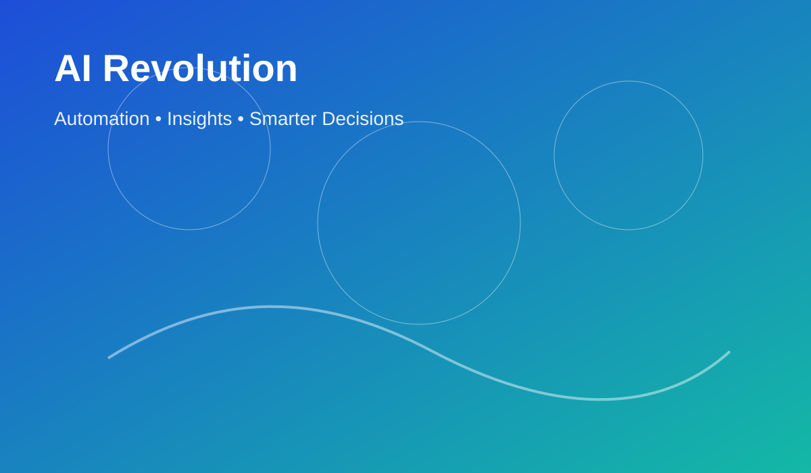

AI Revolution
How AI Is Revolutionizing Industries
AI is helping teams automate repetitive work, analyze data faster, personalize user experiences, and make smarter decisions. From customer support to operations, businesses are using AI to move quicker and work more intelligently.
“
"Artificial intelligence is the new electricity."